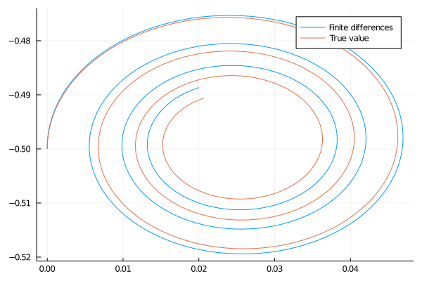
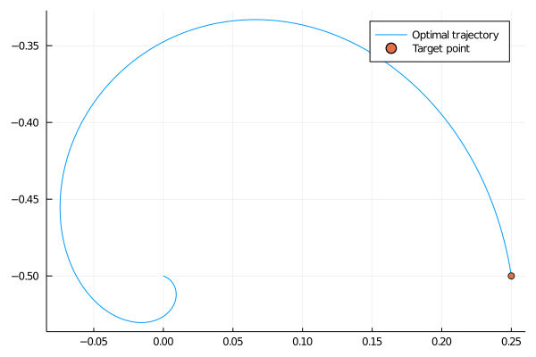

Optimal control
Optimal control combines ordinary differential equations with optimization. It was extensively studied many decades ago when it was used to steer rockets in space.
Permanent magnet synchronous motors
We will consider optimal steering of a PMSM (permanent magnet synchronous motor), which appears in electrical drives. It can be described via the linear equation:
\[\dot x(t) = Ax(t) + q(t) + Bu(t),\]
where $x(t)$ is the state, $q(t)$ is the bias and $u(t)$ is the control term. In the simplest case, we have
\[A = -\begin{pmatrix} \rho & 0 \\ 0 & \rho \end{pmatrix} - \omega \begin{pmatrix} 0 & -1 \\ 1 & 0 \end{pmatrix}, \qquad B = \begin{pmatrix} 1 & 0 \\ 0 & 1\end{pmatrix}, \qquad q(t) = \begin{pmatrix} \rho\psi_{\rm pm} \\ 0 \end{pmatrix},\]
where $\rho=\frac RL$ is the ratio of resistance and inductance, $\psi$ the flux and $\omega$ the rotor speed. Vector $q$ does not depend on time. The state $x(t)$ are the currents in the $dq$-reference frame, and the control $u(t)$ is the provided voltage.
From the theoretical part, we know that the trajectory of the ODE equals to
\[\begin{aligned} x(t) &= e^{At}\left(x_0 + \int_0^t e^{-As}(q+u(s))ds\right) \\ &= e^{At}\left(x_0 + A^{-1}(I-e^{-At})q + \int_0^t e^{-As}u(s)ds\right). \end{aligned}\]
This term contains the matrix exponential $e^{At}$. It can be shown that the eigendecomposition of $A=Q\Lambda Q^\top$ is
\[A = \frac 12\begin{pmatrix} i & -i \\ 1 & 1 \end{pmatrix} \begin{pmatrix} -\rho - i\omega & 0\\ 0 & -\rho+i\omega \end{pmatrix} \begin{pmatrix} i & 1 \\ -i & 1 \end{pmatrix}.\]
We have divided the expression by $2$ because the eigenvectors have a unit norm. Then it is simple to compute the matrix exponential.
\[\begin{aligned} e^{At} &= \frac 12\begin{pmatrix} i & -i \\ 1 & 1 \end{pmatrix} \begin{pmatrix} e^{-\rho t - i\omega t} & 0\\ 0 & e^{-\rho t+i\omega t} \end{pmatrix} \begin{pmatrix} i & 1 \\ -i & 1 \end{pmatrix} \\ &= \dots = e^{-\rho t}\begin{pmatrix} \cos\omega t & \sin\omega t \\ -\sin\omega t & \cos\omega t\end{pmatrix}. \end{aligned}\]
Computing trajectories with no control
We start with no control term, therefore $u(t)=0$. Then the trajectory simplifies to:
\[x(t) = e^{At}\left(x_0 + A^{-1}(I-e^{-At})q \right).\]
Similarly to the wave equation, this system has multiple parameters. To prevent accidentally changing them, we save them in a structure.
struct PMSM{T<:Real}
ρ::T
ω::T
A::Matrix{T}
invA::Matrix{T}
function PMSM(ρ, ω)
A = -ρ*[1 0; 0 1] -ω*[0 -1; 1 0]
return new{eltype(A)}(ρ, ω, A, inv(A))
end
endBesides $\rho$, $\omega$ and $A$, we also store the inverse matrix $A^{-1}$ so that we do not have to recompute it. We now write the expA function, which computes the matrix exponential $e^{At}$.
function expA(p::PMSM, t)
ρ, ω = p.ρ, p.ω
return exp(-ρ*t)*[cos(ω*t) sin(ω*t); -sin(ω*t) cos(ω*t)]
endFor the rest of this section, we will work with the following parameter setting.
ρ = 0.1
ω = 2
x0 = [0;-0.5]
q = [1;0]
ps = PMSM(ρ, ω)The first exercise checks that we computed the matrix exponential correctly.
Verify that the matrix exponential is computed correctly and that it is different from the elementwise exponential.
Hint: The matrix exponential can also be computed directly by the exp function from the LinearAlgebra package.
Solution:
A simple way to verify is to fix some $t$ and evaluate the expressions above.
using LinearAlgebra
t = 5
exp0 = exp.(t*ps.A)
exp1 = exp(t*ps.A)
exp2 = expA(ps, t)While exp1 and exp2 must be identical, they must differ from exp0. Since there are rounding errors for different methods, the matrices will not be identical, and we need to check whether their norm is almost zero.
norm(exp1 - exp0) >= 1e-10 || error("Matrices are wrong")
norm(exp1 - exp2) <= 1e-10 || error("Matrices are wrong")Since the computation resulted in no error (note the opposite sign for exp0), our computation seems to be correct.
Now we can finally plot the trajectories of the electric motor.
Write two function trajectory_fin_diff and trajectory_exact which compute the trajectory. The first one should use the finite difference method to discretize the time, while the second one should use the closed-form formula.
Plot both trajectories on time interval $[0,10]$ with time discretization step $\Delta t=0.01$. Since $x(t)$ is a two-dimensional vector, plot each component on one axis.
Solution:
Both functions create an empty structure for the solution and then iterate over time. Since finite differences compute the solution at the next time, the loop is one iteration shorter. We compute the iteration based on the formulas derived above. The exact method does not need values at the previous point, which implies that numerical errors do not accumulate due to discretization errors.
function trajectory_fin_diff(p::PMSM, x0, ts, q)
xs = zeros(length(x0), length(ts))
xs[:, 1] = x0
for i in 1:length(ts)-1
xs[:, i+1] = xs[:, i] + (ts[i+1]-ts[i])*(p.A * xs[:, i] + q)
end
return xs
end
function trajectory_exact(p::PMSM, x0, ts, q)
xs = zeros(length(x0), length(ts))
for (i, t) in enumerate(ts)
xs[:, i] = expA(p, t)*(x0 + p.invA * (I - expA(p, -t))*q)
end
return xs
endFor plotting, we create the time discretization, compute both trajectories and then plot them.
using Plots
ts = 0:0.01:10
xs1 = trajectory_fin_diff(ps, x0, ts, q)
xs2 = trajectory_exact(ps, x0, ts, q)
plot(xs1[1,:], xs1[2,:], label="Finite differences")
plot!(xs2[1,:], xs2[2,:], label="True value")
The trajectories are different. Something is wrong. However, when we use the time discretization $\Delta t=0.0001$, the solutions are suddenly equal.
ts = 0:0.0001:10
xs1 = trajectory_fin_diff(ps, x0, ts, q)
xs2 = trajectory_exact(ps, x0, ts, q)
plot(xs1[1,:], xs1[2,:], label="Finite differences")
plot!(xs2[1,:], xs2[2,:], label="True value")
Can you guess why this happened? The problem is that the finite difference method performs a first-order approximation of the non-linear function $x(t)$. Since the trajectory always "bends leftwards", the finite differences follow this bending with a delay. The error accumulates over time and is quite large at the end.
Solving the optimal control problem
The goal is to apply such voltage so that the system reaches the desired position $x_{\rm tar}$ from an initial position $x_0$ in minimal possible time. With maximal possible allowed voltage $U_{\rm max}$ this amounts to solving
\[\begin{aligned} \text{minimize}\qquad &\tau \\ \text{subject to}\qquad &\dot x(t) = Ax(t) + q + u(t), \qquad t\in[0,\tau], \\ &||u(t)||\le U_{\rm max},\qquad t\in[0,\tau], \\ &x(0) = x_0,\ x(\tau)=x_{\rm tar}. \end{aligned}\]
Discretizing the problem and solving it using non-linear programming would result in many variables (their number would also be unknown due to the minimal time $\tau$) and is not feasible. Instead, we analyze the problem and try to simplify it. It can be shown that for any terminal state $x_{\rm tar}$, there is some $p_0$ such that the optimal control $u(t)$ has form:
\[\begin{aligned} p(t) &= e^{-A^\top t}p_0, \\ u(t) &= U_{\rm max}\frac{p(t)}{||p(t)||}. \end{aligned}\]
This part hints at the derivation of the previous result and the connection to constrained optimization. Optimal control forms the Hamiltonian (similar to the Langrangian)
\[H = \tau + p(t)^\top (Ax(t) + q + u(t))\]
Since the constraint is time-dependent, the adjoint variable (multiplier) $p(t)$ must also depend on time. Differentiating the Hamiltonian with respect to the $x(t)$ and setting the derivative to $-\dot p(t)$ (instead of zero as in nonlinear optimization) results in
\[-\dot p(t) = A^\top p(t),\]
which has the solution
\[p(t) = e^{-A^\top t}p_0.\]
This is the first condition written above. The second condition can be obtained by maximizing the Hamiltonian with respect to $u$ and arguing that the constraint $||u(t)||=U_{\rm max}$ will always be satisfied (this goes beyond the content of this lecture).
It is not difficult to show
\[e^{-At}a^{-A^\top t} = e^{2\rho t}I.\]
We intend to compute the trajectory. The most difficult part is the integral from $e^{-As}u(s)$. Since
\[\begin{aligned} e^{-As}u(s) &= U_{\rm max}\frac{e^{-As}e^{-A^\top s}p_0}{||e^{-A^\top s}p_0||} = U_{\rm max}\frac{e^{-As}e^{-A^\top s}p_0}{\sqrt{p_0^\top e^{-As}e^{-A^\top s}p_0}} = U_{\rm max}\frac{e^{2\rho s}p_0}{\sqrt{p_0^\top e^{2\rho s}I p_0}} = U_{\rm max}e^{\rho s}\frac{p_0}{||p_0||}, \end{aligned}\]
the trajectory equals to
\[\begin{aligned} x(t) &= e^{At}\left(x_0 + A^{-1}(I-e^{-At})q + \int_0^t e^{-As}u(s)ds\right) \\ &= e^{At}\left(x_0 + A^{-1}(I-e^{-At})q + \int_0^t U_{\rm max}e^{\rho s}\frac{p_0}{||p_0||} ds\right) \\ &= e^{At}\left(x_0 + A^{-1}(I-e^{-At})q + \frac{U_{\rm max}}{\rho}(e^{\rho t}-1)\frac{p_0}{||p_0||} \right). \end{aligned}\]
When we know $p_0$, we can use this formula to compute the optimal trajectory with control. To compute $p_0$, we rearrange the previous equation to
\[\frac{U_{\rm max}}{\rho}(e^{\rho t}-1) \frac{p_0}{||p_0||} = e^{-At}x(t) - x_0 - A^{-1}(I-e^{-At})q.\]
We take the norm of both sides to arrive at
\[\frac{U_{\rm max}}{\rho}(e^{\rho t}-1) = ||e^{-tA}x(t) - x_0 - A^{-1}(I-e^{-At})q||.\]
Since this relation needs to hold for all $t\in[0,\tau]$, we set $t=\tau$ and use the target relation $x(\tau)=x_{\rm tar}$:
\[\frac{U_{\rm max}}{\rho}(e^{\rho \tau}-1) = ||e^{-\tau A}x_{\rm tar} - x_0 - A^{-1}(I-e^{-A\tau})q||.\]
Since this is one equation for one variable, we can compute the optimal time $\tau$ from it.
Solve the optimal time for $x_{\rm tar}= (0.25, -0.5)$ with the maximum voltage $U_{\rm max} = 0.1$.
Hint: To solve the equation above for $t$, use the bisection method.
Solution:
To solve the equation above, we need to find a zero point of
\[f(t) = ||e^{-At}x_{\rm tar} - x_0 - A^{-1}(I-e^{-At})q|| - \frac{U_{\rm max}}{\rho}(e^{\rho t}-1)\]
The graph of the function (plot it) shows a single zero point (for this parameter setting). It can be found by evaluating it at many points at selecting the point with the value closest to zero. A more formal approach is to use the bisection method.
U_max = 0.1
x_t = [0.25;-0.5]
f(t) = norm(expA(ps, -t)*x_t - x0 - ps.invA*(I-expA(ps, -t))*q) - U_max/ps.ρ*(exp(ps.ρ*t)-1)
τ = bisection(f, minimum(ts), maximum(ts))To compute the optimal control and optimal trajectory, we rewrite one of the formulas derived above.
function trajectory_control(p::PMSM, x0, ts, q, U_max, p0)
xs = zeros(length(x0), length(ts))
for (i, t) in enumerate(ts)
eAt = expA(p, t)
emAt = expA(p, -t)
xs[:, i] = eAt*(x0 + p.invA * (I - emAt)*q + U_max/ρ*(exp(ρ*t) - 1)*p0)
end
return xs
endTo compute the optimal trajectory, we compute $p_0$ by the formula derived above. Then we plot the trajectory and the target point.
p0 = ps.ρ/(U_max*(exp(ps.ρ*τ)-1))*(expA(ps, -τ)*x_t - x0 - ps.invA*(I-expA(ps, -τ))*q)
p0 /= norm(p0)
ts = range(0, τ; length=100)
traj = trajectory_control(ps, x0, ts, q, U_max, p0)
plot(traj[1,:], traj[2,:], label="Optimal trajectory")
scatter!([x0[1]], [x0[2]], label="Starting point")
scatter!([x_t[1]], [x_t[2]], label="Target point")
We confirm that the optimal trajectory leads from the starting to the target point.
The optimal trajectory depends on the normed vector $p_0$. All such vectors form a unit circle in $\mathbb R^2$. Therefore, they can be parameterized by an angle $\alpha\in[0,2\pi]$. We plot eight possible optimal trajectories, each corresponding to a different target $x_{\rm tar}$, with uniformly distributed $\alpha$. Since we plot in a loop, we need to initialize an empty plot and then display it.
ts = 0:0.01:10
plt = plot()
for α = 0:π/4:2*π
trj = trajectory_control(ps, x0, ts, q, U_max, [sin(α); cos(α)])
plot!(plt, trj[1,:], trj[2,:], label="")
end
display(plt)
Settings
This document was generated with Documenter.jl version 0.27.6 on Tuesday 21 September 2021. Using Julia version 1.6.2.